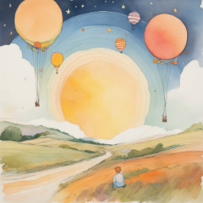
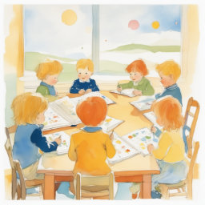
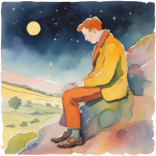

YOUΞNERGY
YOUΞNERGY
Politika zasebnosti
Zakaj čustva zastanejo v telesu?
Glavni cilj naše podzavesti je, da nas ohrani varne. In z namenom, da nas obvaruje pred travmo, včasih potisne čustva na stran - da bi jih sprocesirali kasneje. In takrat, ko jih ne sprocesiramo dovolj hitro, nam zastanejo, kar obtičijo v naših telesih.
Če je nekoga strah, se telo odzove s fizično reakcijo na to čustvo s tem, da aktivira ‘fight-flight-freeze’ odziv. In nanašujoč se na dr. Nelsona, se ob občutenju čustva zgodijo 3 stvari:
Po Olsonu in drugih raziskavah se čustva sprocesirajo v limbičnih strukturah možganov. Te nenehno sprejemamo informacije, ki ustvarjajo predzavestne odzive avtonomnega živčnega sistema in to telesu pošlje signal, ki aktivira ustrezno čustvo.
Z drugimi besedami, naši "občutki" izhajajo iz tega, kar nam sporoča živčni sistem.
Po Nelsonu, ko se drugi ali tretji korak, omenjen zgoraj, prekine, se energija čustev ujame v telo. Posledično lahko občutimo mišično napetost, bolečino ali druge bolezni.
Kdaj čustva zastanejo oz. od česa je odvisno ali zastanejo ali ne?
Čustva običajno zastanejo, ko se nam zgodi nek res močan dogodek (ni nujno, da je travma). V isti situaciji bi enemu morda zastalo več čustev, medtem ko nekomu drugemu sploh nobeno - odvisno kakšna je naša resnična čustvena rezistenca, kakšne so naše pretekle izkušnje, kako hitro lahko predelamo/spustimo dogodke in še kaj.
~ Kaj mislim s tem, ko napišem, da je odvisno, kakšna je naša resnična čustvena rezistenca?
~ Kaj mislim s tem, ko napišem, da je odvisno, kakšne so naše pretekle izkušnje?
Če je nekdo recimo v maternici izgubil brata dvojčka, pa je zaradi tega občutili žalost, se je že rodili z vibracijo žalosti ali izgube. Potem se je kot otrok preselil v drugo okolje in prekinil stike s prijatelji in zopet občutil žalost/izgubo. Takšen človek bo že po svetu hodil z več žalosti v sebi in ker enako privlači enako, je večja možnost, da mu bo zastala žalost, ko bo recimo padel na izpitu, kot pa nekomu, ki žalosti še nima zastale.
~ Kaj mislim s tem, ko napišem, da je odvisno, kako hitro predelamo/spustimo dogodke?
Nekateri ljudje se oklepajo vsake besede, ki jo izreče nekdo drug in v sebi premlevajo in premlevajo dogodke, preden so jih pripravljeni spustiti. Drugi pa to naredijo hitro. Vseeno pa to še ne pomeni, da nekdo, ki ne razmišlja o tem, kaj se je zgodilo, nima nobenega čustva zastalega - odvisno je, ali ga je samo potlačil ali dejansko sprocesiral.
Vsak človek ima zastala čustva, ni pa nujno, da vsa zastanejo tekom našega življenja (večina seveda jih). Lahko jih tudi podedujemo po svojih bioloških starših, jih absorbiramo od koga drugega, nam zastanejo pred spočetjem ali pred rojstvom.
Kakšne vrste zastalih čustev poznamo?
Zgoraj sem zapisala, da ni nujno, da vsa zastala čustva zastanejo tekom našega življenja. Kdaj torej zastanejo oz. kakšne vrste zastalih čustev poznamo?
To so vsa čustva, ki zastanejo tekom naših življenj in niso absorbirana ali deljena.
So tista, ki jih absorbiramo s strani drugih oseb. Npr. otrok je še posebej povezan s svojo mamo in če je moja mama občutila žalost, je možno, da sem jo tudi jazi in jo ponotranjila. To torej ni moja žalost, ampak sem jo absorbirala s strani moje mame. Tud živali velikokrat absorbirajo čustva svojih lastnikov.
Ko z določeno osebo v isti situaciji začutim isto čustvo in to zastane, govorimo o deljenem zastalem čustvu. Je energija zastalega čustva, ki se je razdelila med dve osebi.
Tudi v maternici čutimo in občutimo. Tako je npr. žalost zaradi izgube brata dvojčka tekom nosečnosti primer zastalega čustva pred rojstvom. Pred rojstvom velikokrat zastanejo tudi nesprejetost, neljubljenost, šok itd. - ko se otrok v maternici ne čuti sprejetega, če ne občuti ljubezni in povezanosti s starši… Sploh ni nujno, da je to nekaj 'velikega', a otrok lahko to občuti kor 'veliko'. Velikokrat čustva zastanejo prav ob rojstvu, ko otroku okoliščine ne omogočajo, da bi lahko prišel na svet v svojem tempu.
Zastala čustva lahko tudi podedujemo po svojih bioloških starših (in oni prej po svojih in tako dalje). Ko sproščam podedovana čustva opažam, da gre običajno za res močne dogodke, s katerimi so ta čustva povezana. Npr. gnus - posilstvo, groza - vojna, izdaja - prevara, obup - strah za preživetje. In če jih pred nami ni nihče 'razrešil', je velika verjetnost, da jih tudi mi nosimo s seboj, pa sploh ne vemo oz. so zasidrana globoko v naši podzavesti.
Koliko zastalih čustev imamo?
Pravijo, da ima odrasel človek v povprečju 180 zastalih čustev, jaz pa glede na izkušnje menim, da je številka nekoliko nižja, okoli 160-170. Številka seveda variira - odvisno koliko je nekdo že delal, kako hitro procesira, koliko je podedoval in prišel s tem 'obremenjen' na svet… Opažam pa, da imajo v povprečju ljudje, ki imajo več zastalih čustev, opaznejše težave z zdravjem. Če podam primer: nisem še srečala odrasle osebe, ki bi imela 110 zastalih čustev in večje težave z zdravjem ali vsakodnevne bolečine in nisem še srečala osebe, ki bi imela 200 zastalih čustev in preživljala dneve lahkotno, brez kakršnihkoli težav.
Število zastalih čustev (vseh skupaj ali pa za neko določeno namero/težavo/cilj) lahko potestiram v uvodnem delu sessiona. Tako tudi lažje ocenim, koliko sessionov je zate smiselnih, saj se v povprečju v enem sessionu sprosti okoli 10 zastalih čustev. To nikakor ne pomeni, da nima smisla narediti le 1 ali 2 sessiona - seveda ima, vse se pozna. To rada primerjam z nahrbtnikom - recimo da imaš 160 zastalih čustev, 16 kg v nahrbtniku, ki ga nosiš s sabo na vsakem koraku. Če se 'rešiš' 1 kg prtljage se že nekaj pozna, kajne? ;)